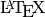

About the basic analysis pipeline¶
The basic procedure for fitting a model.
- Select a Model
- Write a BUGS model to a text file with your editor
- Create a script with basic R commands like loading data
- Prepare the inputs for the JAGS
- Run the model
- Make plots and assess convergence
- Summarize the posterior
Some of the key words that we will become familiar with are: posterior, prior, likelihood, MCMC, initial values, updates and convergence
What is a model?¶
Estimate the mean of a normal population from a sample of measurements
simple-mean
somedata = rnorm(10)
print(somedata)
print(mean(somedata))
[1] "..."
[1] 1.61544312 0.81972087 -0.50430980 1.13789459 0.27579679 0.44726486
[7] 0.79384786 0.21294287 0.19357806 -0.04893248
[1] 0.4943247
Models imply assumptions. Not all models are appropriate even one as simple as the model of the mean– think of skewed or correlated data. Summary statistics are models. Standard error, standard deviation, coefficient of variation etc.
If we just want to fit a common mean to .
This is the same as fitting a linear model with intercept only.
lm-simple
print(lm(somedata ~ 1))
[1] "..."
Call:
lm(formula = somedata ~ 1)
Coefficients:
(Intercept)
0.4943
Open up a editor and follow along¶
Generally each analysis should have its own directory– it make sense if we want to bundle the methods, data and report. Start from an empty *.Rnw template in a directory called model-of-the-mean.
mass,pop,region,hab,svl 6,1,1,1,40 8,1,1,2,45 5,2,1,3,39 7,2,1,1,50 9,3,2,2,52 11,3,2,3,57
Load the data
> data <- read.csv("snakes.csv",header=TRUE,sep=',') > attach(data) > print(names(data))Plot the data
pdf("snakes-hist.pdf",height=6,width=6) hist(y,col='grey',main="distribution of y") dev.off()\begin{figure} \begin{center} \includegraphics[ext=.pdf,scale = 0.9]{"snakes-hist"} \end{center} \caption{This is the figure caption} \end{figure}Add an example of a formula. After all it is .
- Here are the commands you will need:
\usepackage{amsmath}subscript
x_{i}superscriptx^{i}
\sum^{}_{}
\mathbf{}Note
what if you use
align*? or if you put the&at the beginning of each line?
Show and example of how to save data to file. The following code will help you figure it out
a <- rnorm(10) b <- rnorm(10) ab <- data.frame(a,b) dump("ab",file="ab.R") rm(ab) source(file="ab.R") abEdit/create your model, inits and command files
First try this with the provided files. Then if you wish the model and command files can be written to file from your sweave documents using the
catandsinkcommands. The inits file can be written withdump.cat("model{ # priors mu ~ dunif(0,5000) # populaiton mean sigma ~ dunif(0,100) # populaiton sd tau <- 1 / sigma * sigma # Precision = 1 / variance # likelihood for(i in 1:N){ mass[i] ~ dnorm(mu,tau) } } ",fill=TRUE,file="model-of-the-mean.txt")# bundle data jagsData <- list(mass=mass,N=length(mass)) # inits function inits <- function(){list(mu=rnorm(1,600), sigma=runif(1,1,30))} # Parameters to estimate params <- c("mu","sigma") # parameters for MCMC sampling nc <- 3 # Number of Chains ni <- 5000 # Number of draws from posterior (for each chain) nb <- 200 # Number of draws to discard as burn in nt <- 2 # Thinning raterun it
library(R2jags) jagsfit <- jags(jagsData,inits=inits,parameters.to.save=params, model.file="model-of-the-mean.txt",n.thin=nt, n.chains=nc,n.burnin=nb,n.iter=ni)Not using R or R2jags?
The alternative procedures is:
- save the model file
- save the data in a file
- create inits files
- create a command file that specifies file names and MCMC parameters
- make the plots by parsing the results files (CODA)
~$ jags line-reg-simple.cmdor
system("jags line-reg-simple.cmd")Plot the chains (posterior)
jagsfit.mcmc <- as.mcmc(jagsfit) pdf("model-of-the-mean-chains.pdf") xyplot(jagsfit.mcmc) dev.off() pdf("model-of-the-mean-densities.pdf") densityplot(jagsfit.mcmc) dev.off()

{kind=link}

DIC is an estimate of expected predictive error (lower deviance is better).
Download the R script: ModelOfTheMean.R